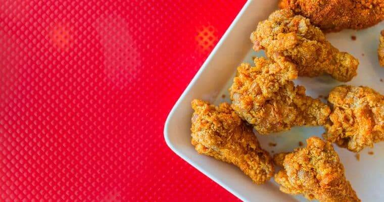
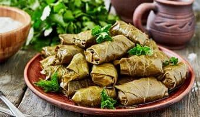
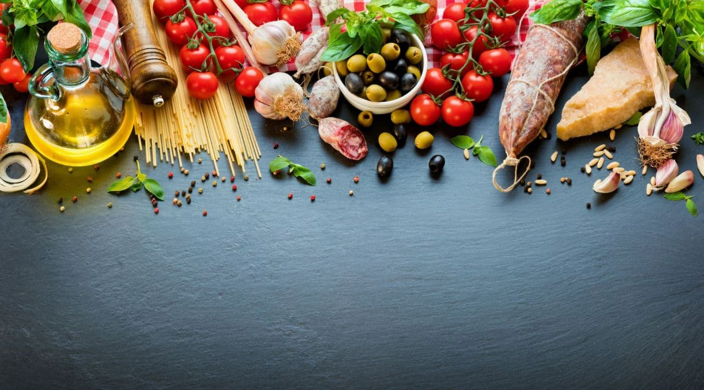
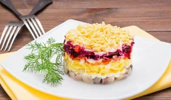
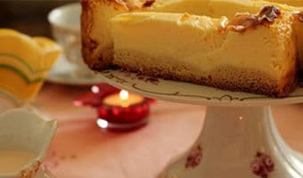

- 
TaomlarKFC TAYYORLASH RETSEPTI
KFC tovuq qanotchalari tayyorlash retseptini ko'pchilik bilishni istaydi. Albatta restoran haqiqiy retseptni oshkor etmaydi va...
- 
Taomlar
DO'LMA TAYYORLASH - UZUM BARGIDAN KOVATOK RETSEPTI
Tokli do'lma (kovatok) uzum barglaridnan tayyorlanadigan nafaqat o'zbek, balki kavkaz,turk va yunon oshxonalaining mashhur... -
 Ichimliklar
Ichimliklar
MOXITO TAYYORLASH RETSEPTI
Yozning issiq kunlarida alkogolsiz moxito kok-teyli chanqoqni qoldirish uchun ajoyib ichimlik sanaladi
- 
Desertlar
VAFLI TEYYORLASH RETSEPTI
Ushbu retsept bo'yicha tayyorlanadigan mazali va hushbo'y vafli yetarlicha ko'p bo'ladi
-

Salatlar
"SHUBA OSTIDAGI SELD"SALATI RETSEPTI
Shuba ostidagi seld yoxud shuba salati eng mashhur ruscha salatlardan biridir. U salatsiz deyarli hech bir bayram , ayniqsa...
-

Desertlar
CHIZKEYK TAYYORLASH RETSEPTI- 5TA ENG MAZALI TURI
Chizkeyk- Yevropa va Amerika oshxonasining klassik pishirig'i . U klassik , likyorli,bananli,shokoladli yoki tvorogli bo'lishi mumkin.